All figures used in the Clean Architecture course, full size for workshops and slides. Back to the interactive course. Regenerate with node tools/build-diagrams.mjs.
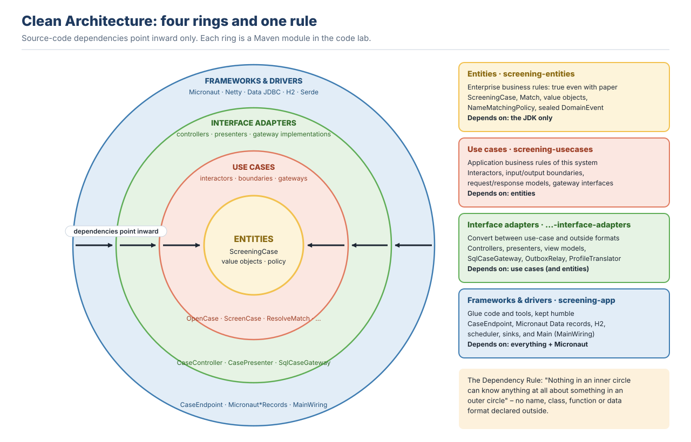
01 · The four rings and the dependency rule (Modules 0 and 1)
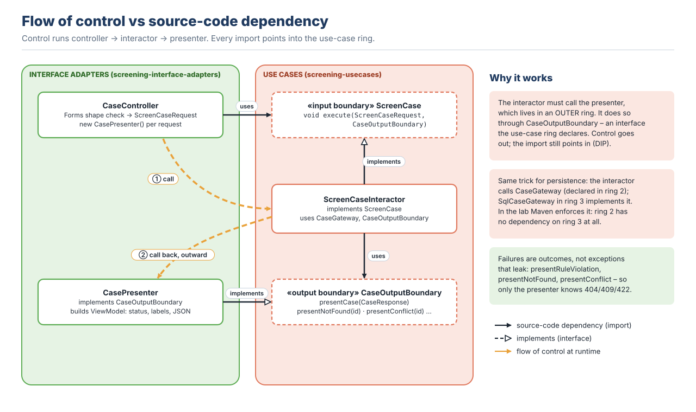
02 · Flow of control vs source-code dependencies (Module 9)
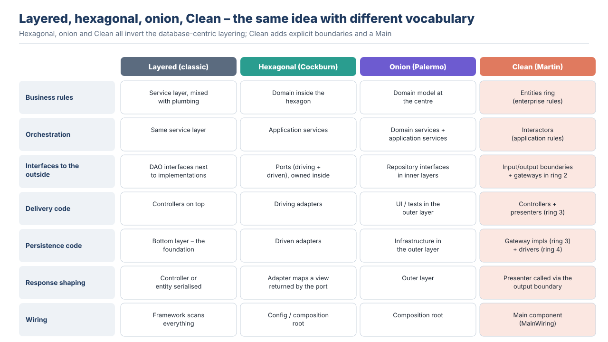
03 · Clean, hexagonal and layered side by side (Module 1)
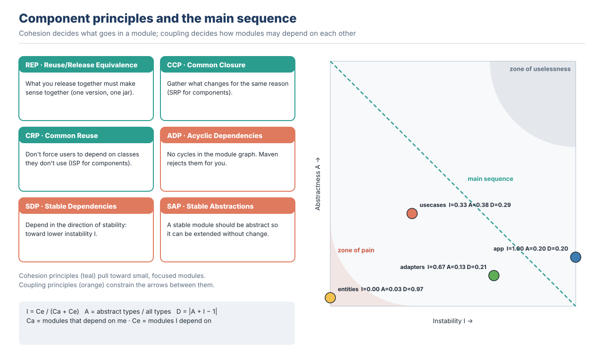
04 · Component principles and the main sequence (Module 3)
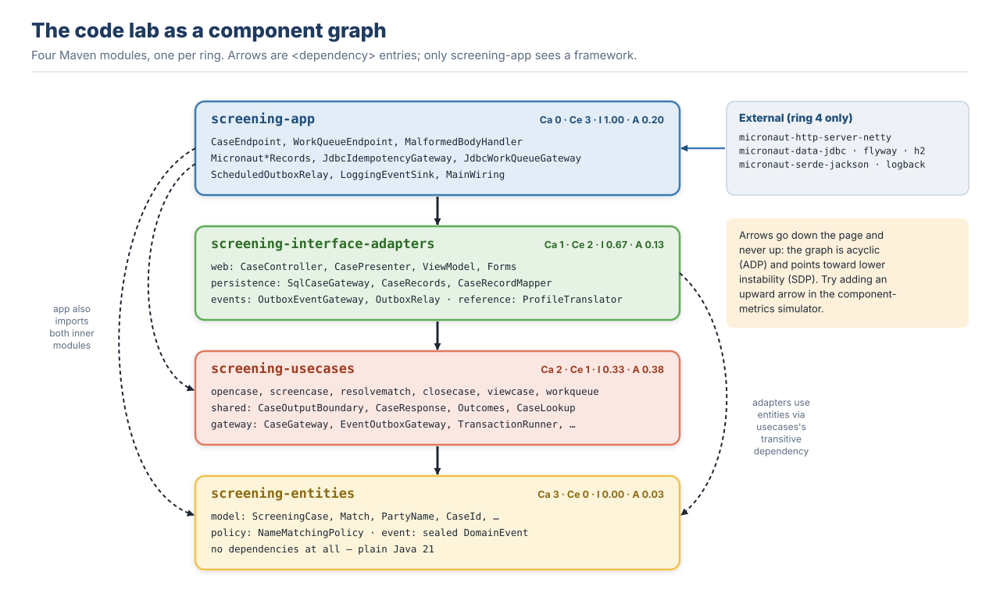
05 · Maven module graph of the code lab (Modules 3 and 10)
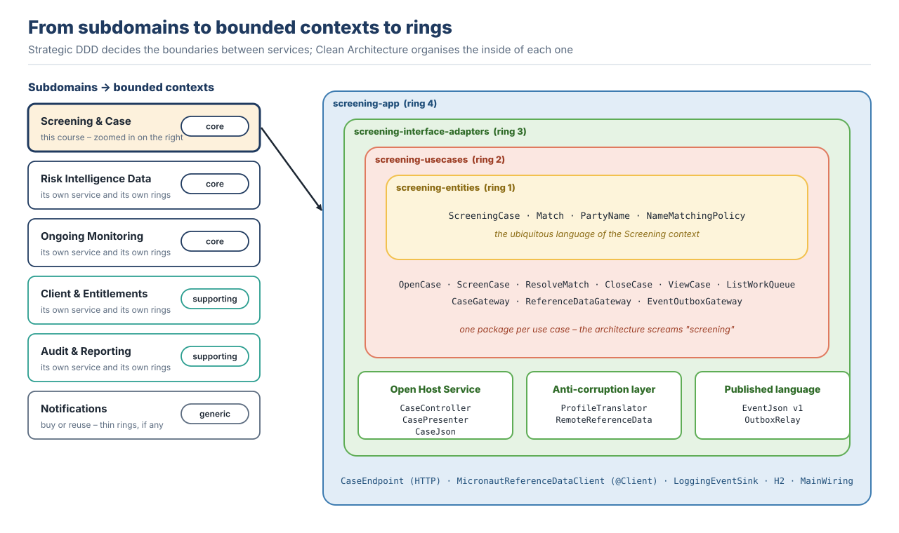
06 · Subdomains, bounded contexts and components (Module 4)
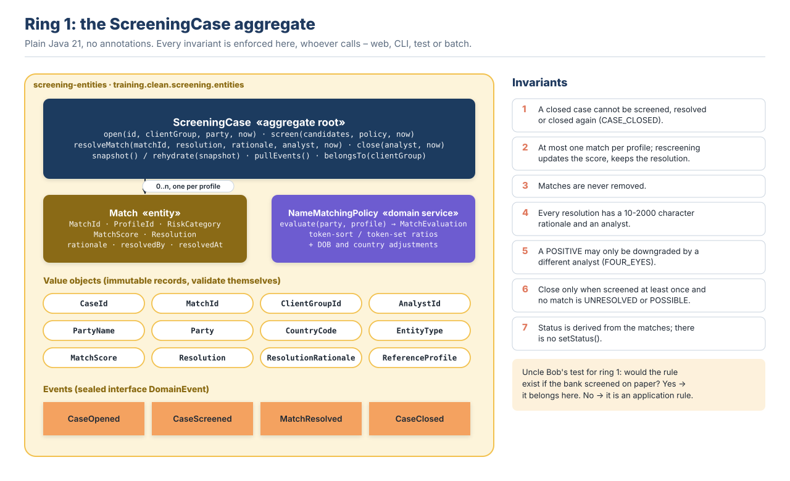
07 · The ScreeningCase aggregate in ring 1 (Module 5)
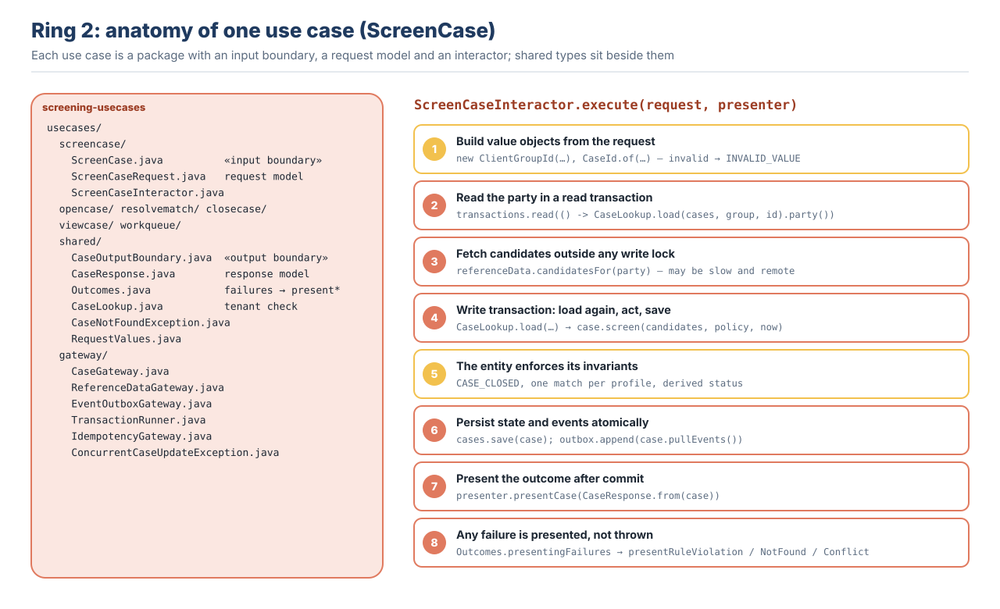
08 · Anatomy of a use case: boundary, interactor, models, gateways, presenter (Module 6)
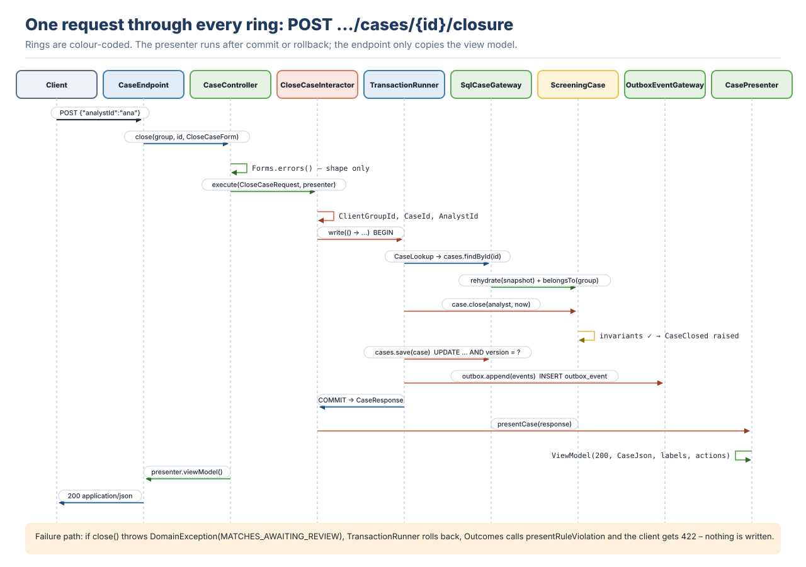
09 · One request through every ring (Modules 9 and 13)
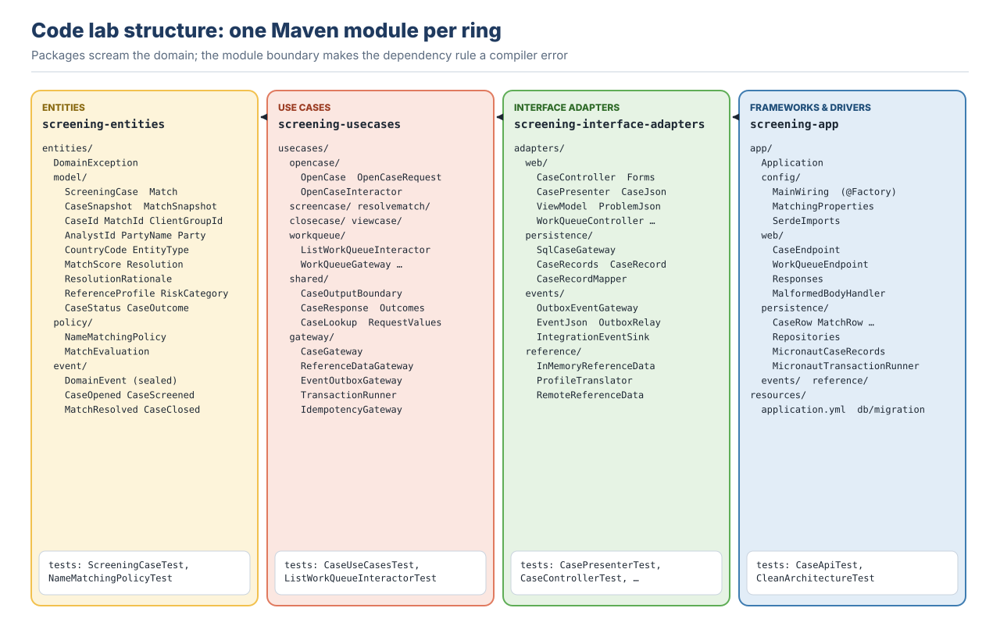
10 · Module and package structure (Module 10)
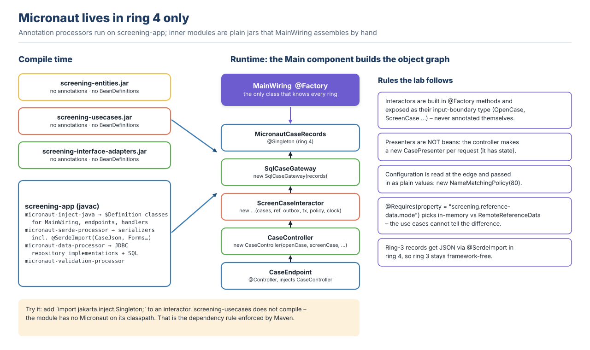
11 · Micronaut in ring 4 only: the Main component wires plain classes (Modules 8 and 11)
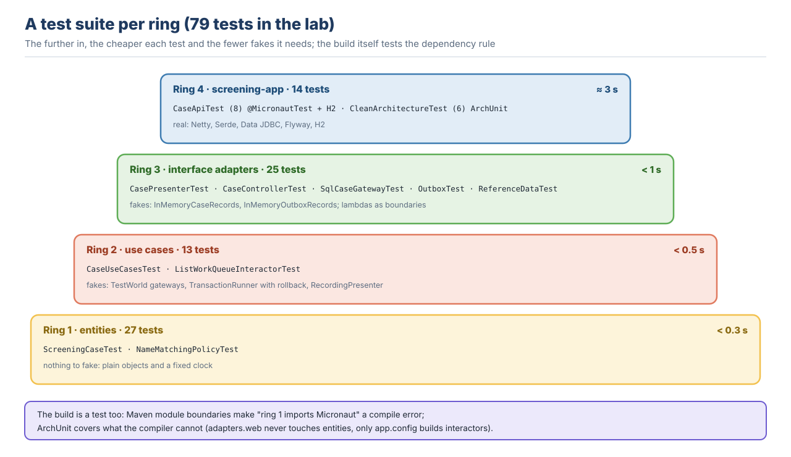
12 · Tests per ring (Module 12)
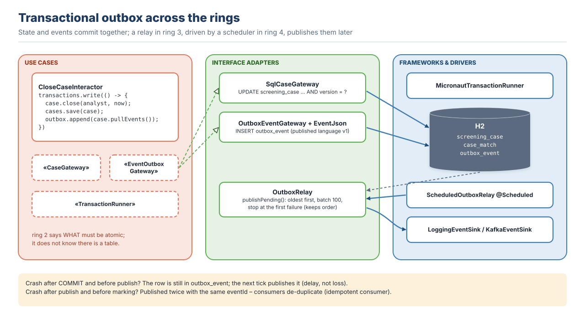
13 · Transactional outbox across the rings (Module 14)
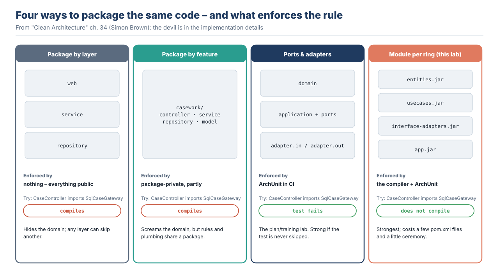
14 · Four ways to package the same code (Module 10)
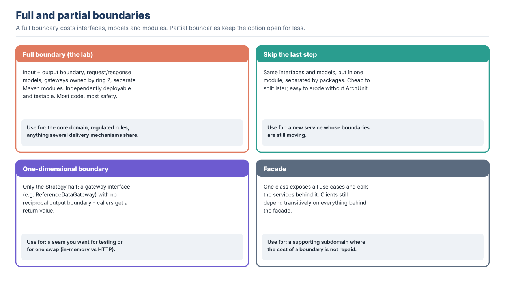
15 · Full and partial boundaries (Module 9)
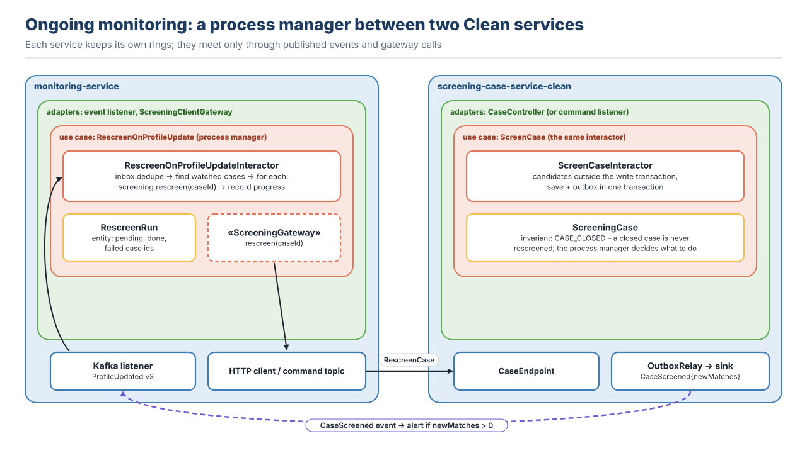
16 · Ongoing monitoring process manager between two Clean services (Module 14)